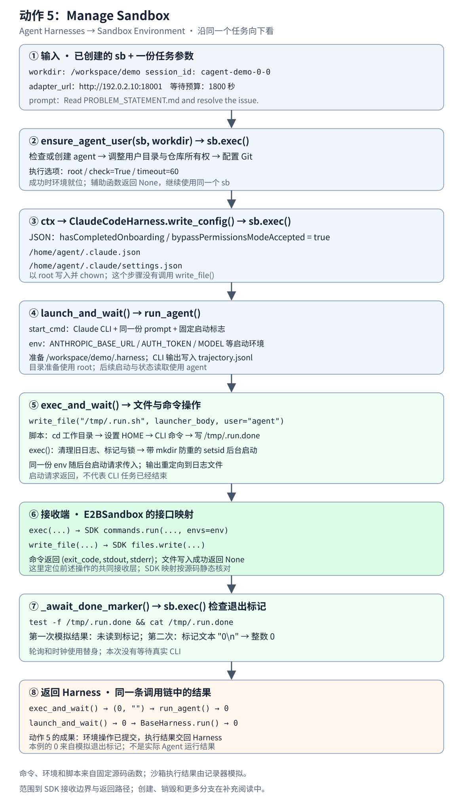

Manage Sandbox 纵向数据流
先看源码阅读路线
源码目录：/home/hongshi/projects/slime/。下面列出完整文件路径；点击链接可查看固定版本 8c17b676 的函数入口。
sandbox.py：认识接口和 E2BSandbox 实现
→ generate.py：读 boot_agent_sandbox()，看谁创建和释放
→ Harness 文件：看调用方怎样使用 sb
→ 回到 sandbox.py：看具体操作怎样落实- slime/agent/sandbox.py:28：先认识
Sandbox接口和:160的E2BSandbox，确认sb提供哪些操作。 - examples/coding_agent_rl/generate.py:96：读
boot_agent_sandbox()，看创建、安装 CLI、交出sb和退出时释放的过程。 - 读 slime/agent/harness/common.py:81，再选 slime/agent/harness/claude_code.py:36 或 slime/agent/harness/codex.py:48：看用户准备、安装、写配置等调用怎样使用
sb。 - 回到 slime/agent/sandbox.py:281：读创建与释放、
exec()、write_file()、read_file()和ensure_agent_user()；exec_and_wait()的进程启动与等待再沿动作 6 深入。
在任务生命周期中的位置
本章：环境能力贯穿准备、运行、收尾；不是仅在启动前执行的一步。


这张局部图只展开 Agent Harnesses → Sandbox Environment 的动作 5。顺着图向下看，下面所有参数、命令和文件内容都来自同一个完整示例。
本例选择 ClaudeCodeHarness，手里已经有创建好的 sb 和准备好的工作目录。Harness 逐步把用户准备、配置写入和运行命令交给沙箱接口。命令与文件内容由固定版本的真实函数生成；沙箱执行结果由记录器模拟。
图上的顺序表示本例的真实调用顺序。对执行环境的修改通过 sb.exec() / sb.write_file() 提交；E2B 实现怎样接收这些操作在第 6 步单独定位。
1. 入口：手里已经有 sb 和一份任务参数
BaseHarness.run() 接收沙箱对象 sb，以及以下字段。
展开完整输入：下面各步骤一直使用这一份参数
{
"workdir": "/workspace/demo",
"session_id": "cagent-demo-0-0",
"adapter_url": "http://192.0.2.10:18001",
"time_budget_sec": 1800,
"prompt": "Read PROBLEM_STATEMENT.md and resolve the issue."
}
| 输入 | 后面用在哪里 |
|---|---|
sb |
同一个沙箱对象，供用户准备、配置写入与运行辅助函数使用 |
workdir |
调整目录所有权；指定 CLI 工作目录和日志位置 |
adapter_url、session_id |
在 CLI 启动时放入环境变量 |
prompt |
组成 CLI 的启动命令 |
time_budget_sec |
用于等待退出标记 |
sb 是操作对象，没有把它伪装成 JSON 字段。上面的地址与目录是教学值。创建沙箱和安装 CLI 已由外层完成；这次从 Harness 使用环境的入口开始。
2. 用户准备：ensure_agent_user() → sb.exec()
它收到的是 同一个 sb 和 workdir="/workspace/demo"。生成的完整命令为：
id agent >/dev/null 2>&1 || useradd -m -s /bin/bash agent && chown -R agent:agent /home/agent /workspace/demo && git config --system --add safe.directory '*' && id agent
交给沙箱接口的执行选项：
{
"user": "root",
"timeout": 60,
"check": true
}
| 子操作 | 成功时环境中的成果 |
|---|---|
id agent，不存在时 useradd |
确认沙箱中的 agent 用户存在 |
chown -R |
让 agent 拥有用户目录和工作目录 |
设置 Git safe.directory，最后再执行 id agent |
准备 Git 访问并检查用户状态 |
sb.exec() 返回三元组。记录器在这一步模拟返回 (0, "", "")；辅助函数不使用 stdout/stderr，返回 None。该步骤的主要成果是沙箱中的用户与权限就位；本次记录器没有实际修改这些状态。
3. 配置准备：ctx → write_config() → sb.exec()
用户准备返回后，BaseHarness.run() 从原输入中取出三项，构造上下文：
{
"workdir": "/workspace/demo",
"session_id": "cagent-demo-0-0",
"adapter_url": "http://192.0.2.10:18001",
"model_label": "slime-actor"
}
model_label 来自默认值。随后 ClaudeCodeHarness.write_config(sb, ctx) 准备这一份 JSON：
{
"hasCompletedOnboarding": true,
"bypassPermissionsModeAccepted": true
}
实际提交给 sb.exec() 的完整命令：
mkdir -p /home/agent/.claude && echo '{"hasCompletedOnboarding": true, "bypassPermissionsModeAccepted": true}' | tee /home/agent/.claude.json /home/agent/.claude/settings.json > /dev/null && chown -R agent:agent /home/agent/.claude /home/agent/.claude.json
| 输入或选项 | 输出或副作用 |
|---|---|
| 配置 JSON | 写入 /home/agent/.claude.json 和 /home/agent/.claude/settings.json |
user="root"、check=True、timeout=60 |
以 root 准备目录、写文件并调整所有权 |
| 模拟成功的执行结果 | write_config() 返回 None，公共流程继续 |
**这里通过 shell 命令写配置。**这个步骤没有调用 sb.write_file()，两个文件内容相同。对于该 Claude 分支，模型地址与会话 ID 稍后进入启动环境变量。
4. 运行准备：命令和环境 → run_agent()
launch_and_wait() 收到 sb + ctx + prompt + time_budget_sec。它从同一份参数组成 CLI 命令与环境，交给公共 run_agent()：
{
"workdir": "/workspace/demo",
"start_cmd": "/usr/local/bin/claude -p 'Read PROBLEM_STATEMENT.md and resolve the issue.' --permission-mode bypassPermissions --output-format stream-json --include-partial-messages --include-hook-events --verbose",
"env": {
"ANTHROPIC_BASE_URL": "http://192.0.2.10:18001",
"ANTHROPIC_AUTH_TOKEN": "cagent-demo-0-0",
"ANTHROPIC_MODEL": "slime-actor",
"CLAUDE_CODE_DISABLE_NONESSENTIAL_TRAFFIC": "1",
"CLAUDE_CODE_DISABLE_EXPERIMENTAL_BETAS": "1",
"CLAUDE_CODE_ATTRIBUTION_HEADER": "0"
},
"time_budget_sec": 1800
}
本例没有额外参数或环境覆盖。prompt 已用 shell 引号处理，workdir 和等待预算保持原值。
run_agent() 先向同一个沙箱提交日志目录准备命令：
mkdir -p /workspace/demo/.harness && chown agent:agent /workspace/demo/.harness
这一条仍以 root 执行，timeout=30、check=True。接着把 CLI 命令交给 exec_and_wait()，指定 user="agent"、tag="run"、want_output=False，日志路径为 /workspace/demo/.harness/trajectory.jsonl。
日志保存 CLI 的 stdout/stderr；这里没有展开 CLI 内部执行工具和请求模型的循环。
5. 文件与启动操作：exec_and_wait() → Sandbox
5.1 输入命令 → 启动脚本
exec_and_wait() 把原来的 workdir、用户和命令放进脚本。实际交给 sb.write_file() 的路径与用户是：
{
"sandbox_path": "/tmp/.run.sh",
"user": "agent"
}
完整文件内容：
#!/bin/bash
cd /workspace/demo
export HOME=/home/agent
/usr/local/bin/claude -p 'Read PROBLEM_STATEMENT.md and resolve the issue.' --permission-mode bypassPermissions --output-format stream-json --include-partial-messages --include-hook-events --verbose
echo $? > /tmp/.run.done
成功时 write_file() 返回 None。脚本在 CLI 命令之后，把它的退出码写入 /tmp/.run.done。其中 HOME 是现有源码在沙箱脚本中设置的进程环境。
5.2 清理旧状态 → 提交后台启动
先用单独一次 sb.exec() 清理本次 tag 的旧状态：
rm -rf /tmp/.run.spawned; rm -f /workspace/demo/.harness/trajectory.jsonl /tmp/.run.done
再用下一次 sb.exec() 启动：
chmod +x /tmp/.run.sh; mkdir /tmp/.run.spawned 2>/dev/null || exit 0; setsid bash /tmp/.run.sh < /dev/null > /workspace/demo/.harness/trajectory.jsonl 2>&1 &
| 启动输入 | 接口实际接收的值 |
|---|---|
user |
agent |
env |
第 4 步展示的完整环境变量字典 |
timeout |
30，限制这次启动命令请求 |
check、idempotent |
均为 True |
mkdir /tmp/.run.spawned 是同一次启动 RPC 的重放防护。锁目录已经存在时，这条命令提前退出。不同逻辑调用会先清理旧状态；同一沙箱里不能并发使用相同 tag。
**启动这条 shell 命令结束后，CLI 任务仍可能在后台运行。**退出标记用于后面的等待。
6. 接收端：E2BSandbox 把操作交给 SDK
前面各步调用的是 Sandbox 接口。本例的实际后端若为 E2BSandbox，它会作以下交接；这一节按源码静态对应，没有连接 E2B。
| 收到的操作 | 下层接收点 | 回给调用方什么 |
|---|---|---|
sb.exec(cmd, user=..., env=..., timeout=...) |
self._sb.commands.run(cmd, user=user, envs=env, timeout=timeout, ...) |
(exit_code, stdout, stderr) |
sb.write_file(path, launcher_body, user="agent") |
self._sb.files.write(path, launcher_body, user="agent") |
成功返回 None，脚本写入沙箱 |
以第 5.2 步的启动操作为例，cmd 保持原字符串，env 改用 SDK 的参数名 envs。check 和 idempotent 留在 Slime 包装层处理，不作为这次 SDK 命令的参数。
E2BSandbox.exec() 成功时将 SDK 结果整理成：
(res.exit_code, res.stdout or "", res.stderr or "")
这就是图中的 Harness → Sandbox 交接：调用方提供环境操作，接收方执行对应的 SDK 调用并返回结果。远端网关和 CLI 本体到这里作为外部边界。
7. 等待与返回：退出标记 → Harness 的整数结果
_await_done_marker() 继续通过同一个 sb.exec() 检查：
test -f /tmp/.run.done && cat /tmp/.run.done
每次检查使用 user="agent"、timeout=15、check=False。本例记录器模拟两次检查：
| 检查 | sb.exec() 的模拟返回 |
等待函数怎样处理 |
|---|---|---|
| 第一次 | (1, "", "") |
没有读到标记，继续等待 |
| 第二次 | (0, "0\n", "") |
将标记内容转成整数 0，返回 |
这两次检查间隔由替身时钟模拟，没有真的等待或运行 CLI。返回值继续沿原来的调用链交回：
_await_done_marker() -> 0
exec_and_wait() -> (0, "")
run_agent() -> 0
launch_and_wait() -> 0
BaseHarness.run() -> 0
want_output=False 且退出码为 0 时，exec_and_wait() 返回空输出，不读日志。此处的 0 是记录器提供的示例结果，用于核对返回路径；不是这次真实 Agent 运行成功的证据。
8. 动作 5 到这里结束
同一个 sb 接收了用户准备、配置、目录、启动脚本、后台启动和状态读取操作。Harness 最后收到一个整数退出码。模型输入转换、训练轨迹和任务评分都没有混入这条局部链。
创建与销毁由外层上下文管理，按需补看创建入口和生命周期。读懂本图的操作与返回之后，再展开这些边界。
已经理解数据流后：源码位置与进一步校验
固定源码版本：8c17b676cb57af1d17ee4402e91e9209af84b60b。路径均相对于 Slime 仓库根目录。
| 要校验的事实 | 定义 / 调用位置 |
|---|---|
| 公共入口接收已有沙箱 | slime/agent/harness/common.py:81 |
| 先准备用户，再构造上下文、写配置、启动等待 | slime/agent/harness/common.py:97–:104 |
| 用户准备生成命令 | slime/agent/sandbox.py:390、:392 |
| Claude 配置内容与沙箱写入命令 | slime/agent/harness/claude_code.py:44–:55 |
| 命令与环境传给 runner | slime/agent/harness/claude_code.py:57–:71 |
| 日志目录准备与长命令调用 | slime/agent/harness/common.py:107、:110、:111 |
| 启动脚本内容与写入 | slime/agent/sandbox.py:107–:113 |
| 清理旧状态与后台启动 | slime/agent/sandbox.py:122、:129 |
| 检查并读取退出标记 | slime/agent/sandbox.py:65、:76 |
| E2B 命令接口与成功返回 | slime/agent/sandbox.py:309、:324、:334 |
| 文本文件写入 SDK | slime/agent/sandbox.py:342、:377 |
| 等待结果与整数返回 | slime/agent/sandbox.py:139–:145；slime/agent/harness/common.py:122 |
已执行校验： 从上述 Git blob 提取公共入口、Claude 子类、runner 与长命令辅助函数，替换沙箱为记录器；真实函数生成本例的命令、环境、脚本，并走完模拟两次轮询后的成功返回路径。单例元类替换为普通 ABC 元类，环境覆盖为空；等待与时钟使用替身。
静态核对： E2BSandbox 的 SDK 参数映射。没有执行 E2B SDK、远端用户或文件修改、CLI、模型请求。示例中的命令返回值都是模拟值。